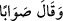

“Ruh ve melekler çok oldukları ve Allah Teâlâ’nın kullarla ilgili olarak kendilerine
vereceği emri yapmaları için saf saf olup durdukları halde o gün Rahman’ın izin
verdiklerinden başkaları konuşmazlar.” Bu verdiğimiz anlam Fecr sûresindeki
“Rabbin(in) emri geldiği ve melekler saf saf dizildiği zaman” (el-Fecr, 89/22) âyet-i
kerîmesine daha uygun olan bir tefsir tarzıdır.
Tefsirini yaptığımız bu âyetteki “yevm” kelimesi “la yetekellemûn. konuşmazlar”
kelimesinin zarfıdır. “__WORD__/Rahman’ın izin verdiklerinden başkaları
hâriç onlar da doğruyu söylerler” cümlesi “la yetekellemûn” fiilinin fâilinden
bedeldir. Yukarda işâret ettiğimiz üzere bu fiilin fâili ruh ve melekler dâhil olmak üzere
yeryüzündekilerle göktekilerdir. Bu âyet-i kerîmede meleklerin ve ruhun saf saf olup
durmalarının zikredilmesi, Allah Teâlâ’nın saltanat, azamet, rablık, kibriyâ ve bu
sûrenin başından sonuna kadar sözün dönüp dolaştığı odak noktası olan öldükten sonra
dirilme gününün korkunçluğunun vurgulanması içindir.
“__WORD__/Konuşan da doğruyu söyler” cümlesi yukarda geçen “konuşmazlar” fiilinin
anlamını vurgulayıp pekiştiren bir başlangıç cümlesidir. Burada şöyle denmiş
olmaktadır: “Göktekilerle yerdekiler o gün söz namına hiçbir şeye kadir olamadıklarına
ve ancak Allah Teâlâ’nın izin verdiği kimse konuşabileceğine göre o halde konuşmasına
izin verilen kimse ancak ve ancak doğru söyleyecektir.” Bir başka ifâdeyle; doğru sözü
söyleyecektir veya hatâ etmeksizin mahallinde vâki olan neyse onu söyleyecektir.
Öyleyse onlar Rabbul izzet’e karşı konuşmaya nasıl mâlik olabilirler ki! O Rabbü’l-
izzet mutlak kelamdan daha has ve maksad itibariyle daha azizdir. Buna göre âyet-i
kerîmeye mânâ vermek gerekirse şöyle deriz: Onlar sadece Rahman’ın kendisine izin
verdiği şahıs hakkında konuşabileceklerdir. Bu şahıs da hakkı söyleyecektir. Bu hak
tevhid ve kelime-i şehadet’tir. Şu halde hakkı söyleyen kişinin dışındaki şirk koşanlar,
Rahman ile konuşamayacaktır. Çünkü onlar dünyada iken doğruyu ve hakkı
konuşmamışlardır. Tam aksine kelime-i küfr ve şirki konuşmuşlardır.
Son âyette “Rahman” kelimesinin yerine zamir getirmek gerekirken açık biçimde
Rahman kelimesinin getirilmesi sebebsiz değildir. Böylece onlara verilen iznin
dayanağının, Allah Teâlâ’nın mükemmel rahmeti olduğuna işâret edilmektedir. Çünkü
Allah Teâlâ üzerinde hiç kimsenin konuşma hakkı yoktur.
Bakli’nin Arais isimli eserinde şöyle denilmektedir: Dünyada iken kelamı ahval
açısından, ahvâli vecd açısından, vecdi keşf açısından, keşfi müşâhede bakımından,
müşâhedesi muayene bakımından olan kimse dünyada ve âhirette konuşmaya izinlidir.
Böyle bir kimse, Hak Teâlâ ile birlikte hürmet ve hibe sergisi üzerinde konuşur. Allah o
kişi sâyesinde yaratıkları helâk olma tehlikesinden kurtarır.
İbn Atâ şöyle diyor: Sözün halis olanı sırf Allah için konuşulanıdır. Sözün doğru
olanı ise sünnete uygun olanıdır.
Bâzı âlimler şöyle derler: O gün cem ehli için umumiyetle heybet ortaya çıkar. Ama
havas ve huzur ashâbına gelince onlar sonsuza kadar izzeti heybet sıfatıyla birlikte